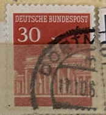
| SOURCE | TITLE| IMAGE MATCH | click to source page |
| eBay | West Germany - 1966 - Brandenburger Tor - 30Pfg - Used - #08 | eBay | 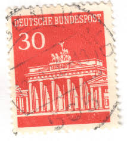 |
| eBay | German Individual 1961-1970 Year of Issue Stamps for sale | eBay |  |
| eBay | Germany - 1966 - 20Pfg - Brandenburger Tor - #17961 | eBay | 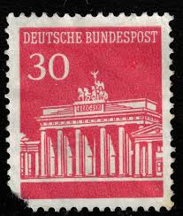 |
| HipStamp | Germany 1966 Sc#954 30pf Red Brandenburg Gate Used | Europe - Germany & Colonies - Germany, General Issue Stamp / HipStamp | 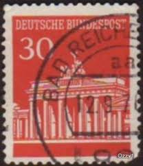 |
| myloview.com | Germany - circa 1966: a postage stamp from germany, showing the • wall stickers stamp, special, printed | myloview.com | 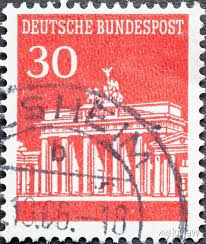 |
| oldthing | 508 Brandenburger Tor 30 Pf O | Briefmarken günstig | 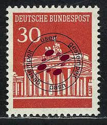 |
| Encyclopaedia Philatelica | The Brandenburg Gate was erected between 1788 and 1791 according to designs by architect Langhans, whose vision was inspired by the propylaea in Athens' Acropolis. The neoclassical sandstone work is the only |  |
| Find Your Stamps Value | BERLIN - Brandenburg Gate Type of Germany 100pf Dark blue stamp price, value | 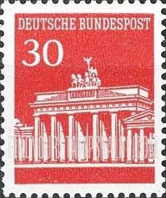 |
| eBay | Deutsche Bundespost 30 Triumphal Arch German Postage Stamp | eBay | 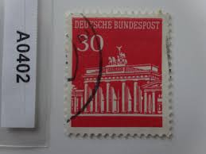 |
| Shutterstock | Ankara Türkiye- 06282025 Postage Stamp Printed Stock Photo 2647404819 | Shutterstock | 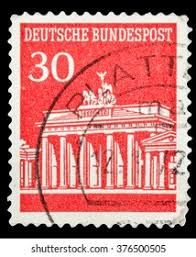 |
| Todocolección | sello alemán. deutsche bundespost 70 pf. max li - Buy Antique stamps of Germany on todocoleccion | 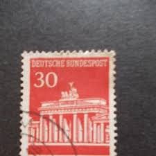 |
| Colnect | Stamp: Brandenburg Gate, Berlin (Germany, Federal Republic(Brandenburg Gate) Mi:DE K9,Sn:DE 954a,Yt:DE 370a,Sg:DE 1414a 📮 | 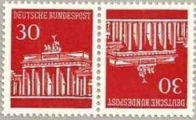 |
| Dreamstime.com | USA - CIRCA 1970: a Stamp Printed in USA Shows President Dwight D. Eisenhower, Circa 1970. Editorial Stock Photo - Image of 1970, army: 158453373 | 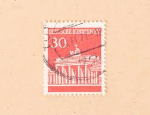 |
| Shutterstock | 2+ Thousand Deutsche Bundespost Royalty-Free Images, Stock Photos & Pictures | Shutterstock | 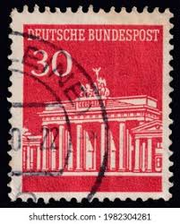 |
| ebid.net | Germany 1966 Bundespost Buildings 30Pfg Used Stamp on eBid United States | 215182188 | 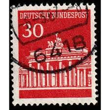 |
| Dreamstime.com | Vintage Prussian Postman Hat Isolated on White Background Stock Image - Image of vintage, mailing: 307734829 | 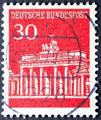 |
| iStock | Germany Postage Stamp Stock Photo - Download Image Now - Mail, Rubber Stamp, Black Background - iStock | 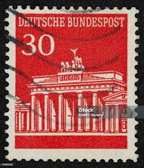 |
| iStock | Anti Fascist East Germany Stamp Stock Photo - Download Image Now - Adult, Army, Black Background - iStock | 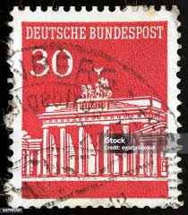 |
| 123RF | INDIA - CIRCA 1972: Stamp Printed By India, Shows Flag Of USSR And Spasski Tower, Circa 1972 Stock Photo, Picture and Royalty Free Image. Image 17464462. | 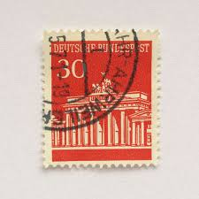 |
| Colnect | Stamp: Brandenburg Gate, Berlin (Germany, Federal Republic(Brandenburg Gate) Mi:DE W28,Yt:DE 369-370 📮 | 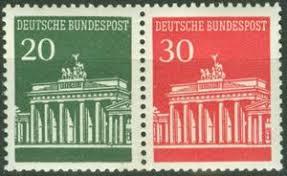 |
| Amazon.com | Amazon.com: FRD (FR.Germany) KZ5 unmounted Mint/Never hinged ** MNH 1967 Brandenburg Tor (Stamps for Collectors) : Toys & Games |  |
| Shutterstock | 4,351 Commemorating German Postage Stamp Royalty-Free Images, Stock Photos & Pictures | Shutterstock | 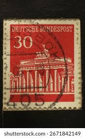 |
| eBay | BERLIN 1966 MHB5 + PLF ** POSTFRISCH MARKENHEFTCHENBOGEN UNGEFALTET 480€+(I9127d | eBay | 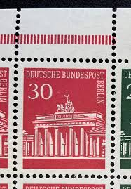 |
| iStock | Germany Stamp Shows Brandenburg Gate Illustration Stock Photo - Download Image Now - iStock | 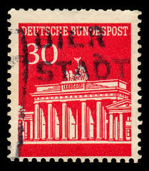 |
| eBay | 50+ stamps for Art or Crafting - Germany #941 depicting The Brandenburg Gate | eBay | 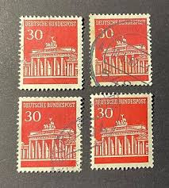 |
| eBay | Germany 1966-68 30pf BRANDENBURG GATE SC 954 MNH | eBay | 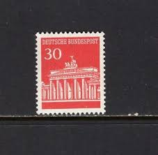 |
| The Itty Bitty Stamp Company | Germany Berlin Scott # 9N251c Mint Never Hinged – The Itty Bitty Stamp Company |  |
| Alamy | Deutsche post old hi-res stock photography and images - Page 7 - Alamy |  |
| eBay | Joint Issue KZ6 Mint** (AD 626) | eBay | 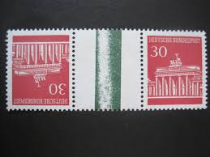 |
| eBay | Brandenburg Stamps 1941-1950 Year of Issue for sale | eBay | 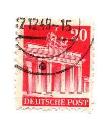 |
| eBay | Berlin 288 PFI ABART gest. 220EUR (B6849 | eBay | 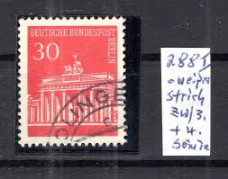 |
| eBay | Berlin Occupation #9N251 w/9N253, Mint/NH/VF, Part of Booklet, 1966 | eBay | 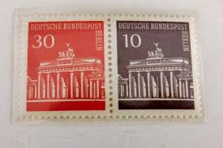 |
| HipStamp | Germany 1948-51 Scott 646a used - 20 pf, Brandenburg gate, Berlin | Europe - Germany & Colonies - Germany, General Issue Stamp / HipStamp | 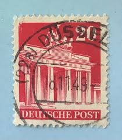 |
| iStock | German Postage Stamp Stock Photo - Download Image Now - Germany, Antique, Black Background - iStock | 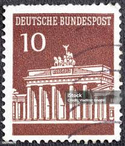 |
| lastdodo.com | Joachim Hans Hiller [1915] Stamp catalogue - LastDodo | 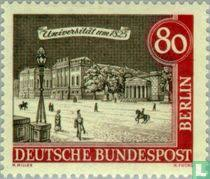 |
| Todocolección | alemania rfa 1994 scott 1870 usado - Buy Antique stamps of Germany on todocoleccion | 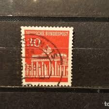 |
| Todocolección | 694496 mnh alemania federal 1959 europa cept. c - Buy Antique stamps of Germany on todocoleccion | 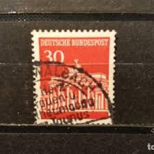 |
| HipStamp | Germany Scott 952-956 used 1966-1968 stamp set | Europe - Germany & Colonies - Germany, General Issue Stamp / HipStamp |  |
| eBay | Berlin Zusammendruck Nr. W45 postfrisch** (AD 133) | eBay | 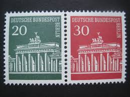 |
| Does anyone have more information about this stamp? | 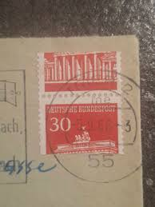 | |
| Shutterstock | 2+ Thousand Deutsche Bundespost Royalty-Free Images, Stock Photos & Pictures | Shutterstock | 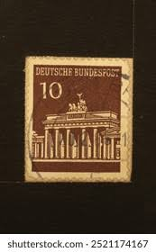 |
| eBay | 1948 German Postage Stamp During British Occupation 20 German Pfennig Buildings | eBay | 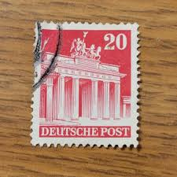 |
| eBay | Deutsche Bundespost 10 Germany/German Postage Stamp | eBay | 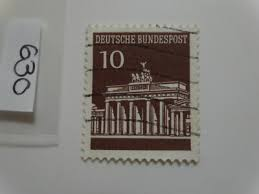 |
| Alamy | GERMANY-CIRCA 1948:A stamp printed in GERMANY shows image of The Brandenburg Gate (German: Brandenburger Tor) is a former city gate and one of the main symbols of Berlin and Germany, circa 1948 | 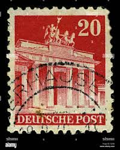 |
| Shutterstock | December 6 2025 Jakarta Indonesia Postage Stock Photo 2721688845 | Shutterstock | 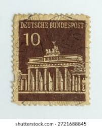 |
| Todocolección | sellos aleman, deutsche post, 20, pf 1948 - Buy Antique stamps of Germany on todocoleccion | 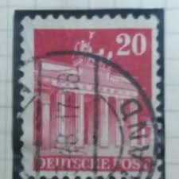 |
| eBay | Germany-Berlin 9N205 block/4, MNH. Mi 227. Definitive 1962. Berlin, University. | eBay | 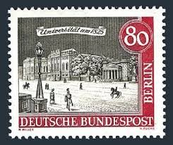 |
| eBay | Stamp Germany AM Zone DOUBLE PERFORATION 1948, Mi85, mint, 2170 | eBay | 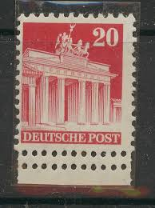 |
| Alamy | Brandenburg gate 1945 hi-res stock photography and images - Alamy | 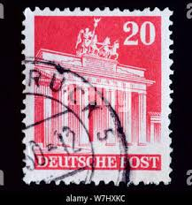 |
| Dreamstime.com | German stamp editorial photo. Image of letter, envelope - 7766251 | 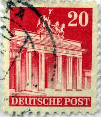 |
| HipStamp | Germany 646: 20pf Brandenburg Gate, used, F-VF | Europe - Germany & Colonies - Germany, General Issue Stamp / HipStamp | 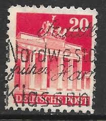 |
| eBay | Bizonal (Allied Cast) 85W A tight dentate unmounted mint / never hinge (9702236 | eBay | 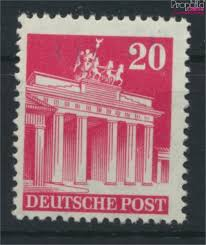 |
| eBay | Germany, Postage Stamp, #646 Lot Mint NH, 1948 Bradenburg Gate Berlin (AB) | eBay | 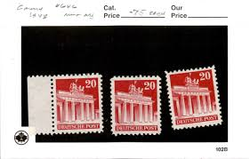 |
| Etsy | Men's Silver Cufflinks. Unique Cufflinks Handmade From Vintage 60s German Brandenburg Gate Stamps. Perfect Berlin Silver Cuff Links for Men. - Etsy | 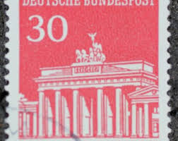 |
| eBay | Germany Scott # 954/x/954 VF Used 1966 Michel Zusammendrucke KZ5 | eBay | 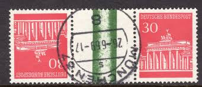 |
| eBay | Germany #952-56 Mint Never Hinged- WDWPhilatelic (S4A) (2/25) | eBay | |
| Shutterstock | Ankara Türkiye 3 September 2021 Germany Stock Photo 2035632848 | Shutterstock | |
| Alamy | A stamp printed in Germany (West Berlin, American and British occupation zone) shows the Brandenburg Gate, circa 1948 Stock Photo - Alamy | |
| Stamp Auction Network | Heinrich Koehler Auctions GmbH & Co. KG Sale - 380 Page 259 | |
| eBay | Germany Scott #B303 VF Unused 1948 20 + 10 Pfg. Brandenburg Gate Berlin | eBay |